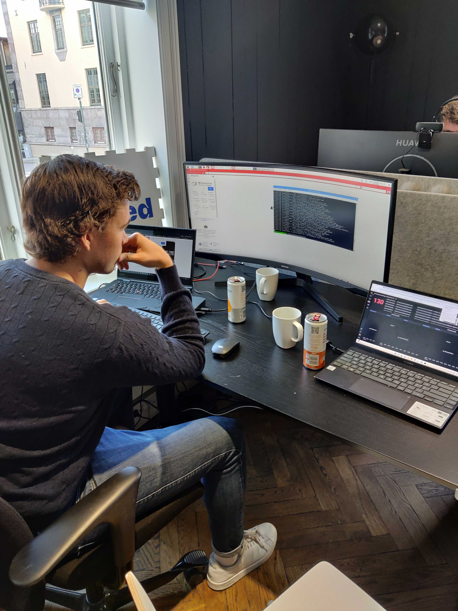
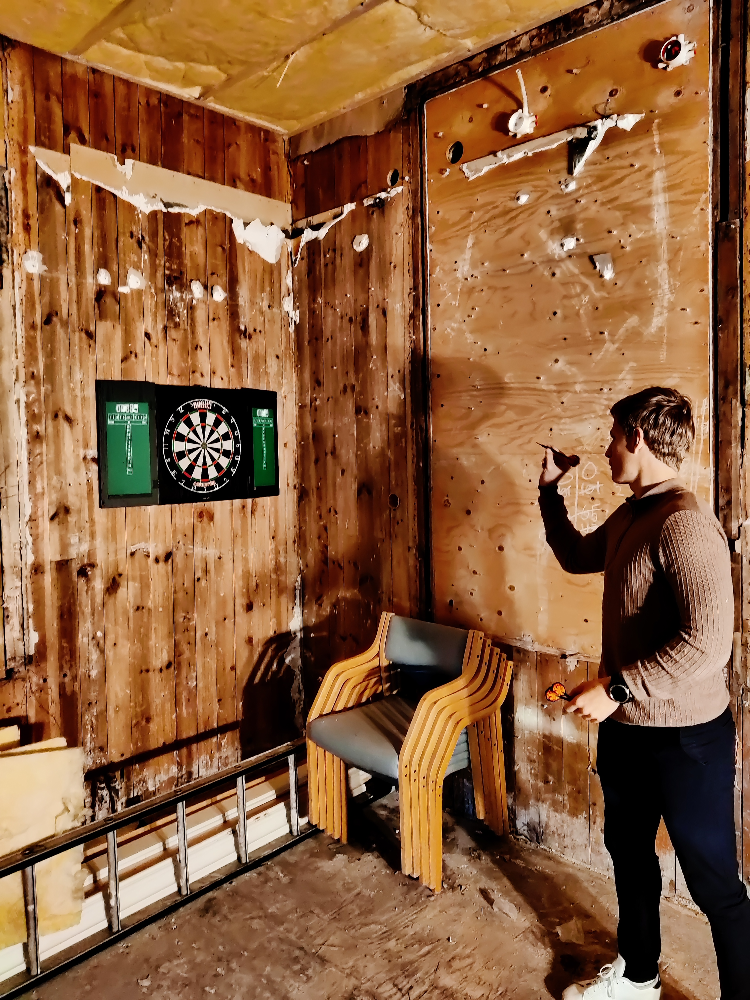
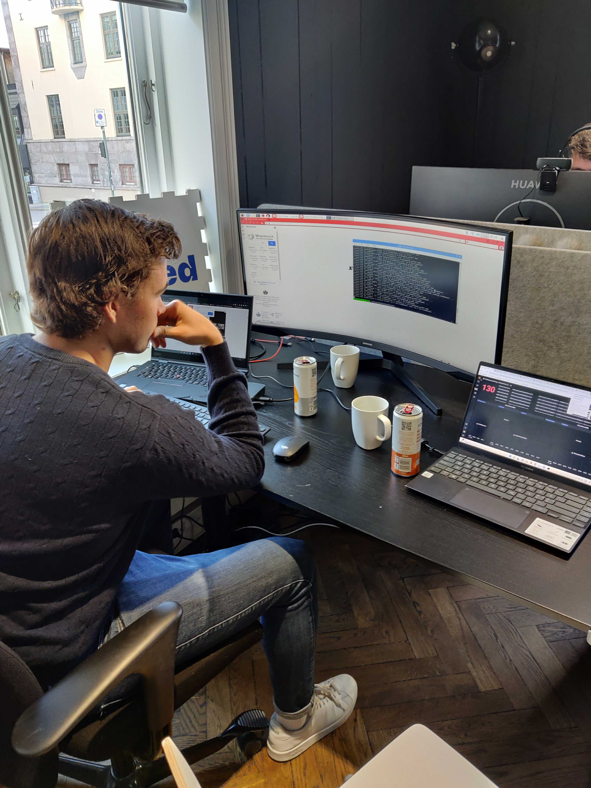
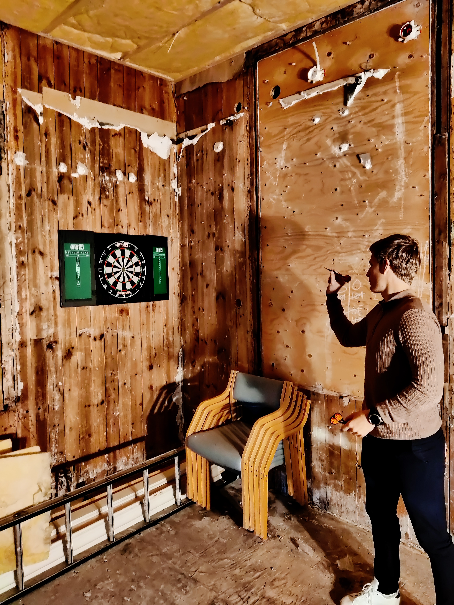
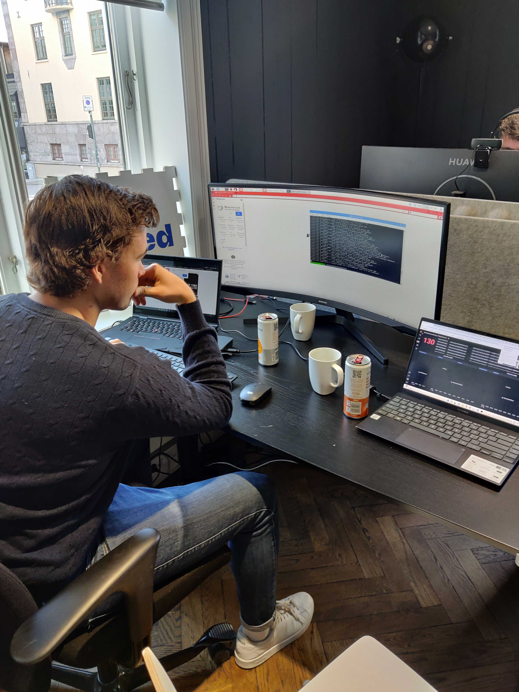
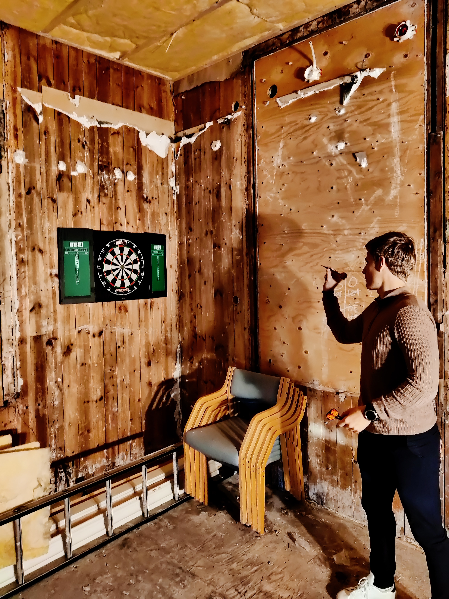

Hei, vi er Aleksander(23) og Hermann(23) og har praksis hos Oxidane Venture. Vår hovedoppgave sånn det står
nå hos Oxidane Venture blir å trekke verdi ut av data gjennom bruk av Grafana. Grafana er en åpen
kildekode-løsning som brukes til dataanalyse hvor man kan gi mening til store mengder data noe som gjør det
enklere å overvåke systemer gjennom Grafanas oversikelige og tilpassbare dashboards. Videre skal tilhørige
rammeverk og teknologier som Micrometer og Prometheus tas i bruk.
Det vi synes har vært mest lærerikt har vært arbeidet innen DevOps og mer spesifikt monitorering, hvor vi
har lagt inn metrics i produksjons koden. Dette for å bland annet måle systemets effektivitet samt dets
irregulariteter. Vi har også fått god kjennskap til skytjenesten Microsoft Azure og sett hvordan de agile
arbeidsmetodikkene fra studiet brukes i praksis. Videre har det og fått tett oppfølging fra utviklings
teamet bidratt til at vi raskt har fått satt oss inn i deres utviklingsprosess.
Når det kommer til hvordan studiet har forberedt oss på arbeidslivet så har kunnskap om agile
arbeidsmetodikker har gjort det lettere for oss å sette oss inn i utviklingsprosessen hos Oxidane. Erfaring
fra studiets prosjekter har gitt oss den tekniske forståelsen som gjør det mulig å fullføre arbeidsoppgavene
våre.
Det er vanskelig å peke ut en ting som mest morsomt, men av det vi har opplevd så langt står den ukentlige
dart konkurransen, middag med det polske utviklingsteamet og tilegning av ny kunnskap og ferdigheter høyt
oppe.

